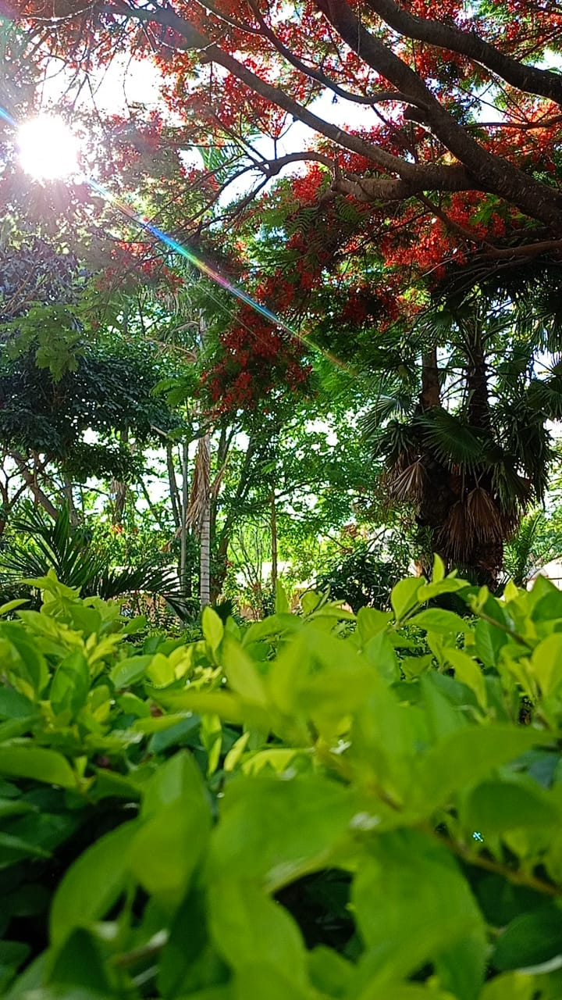
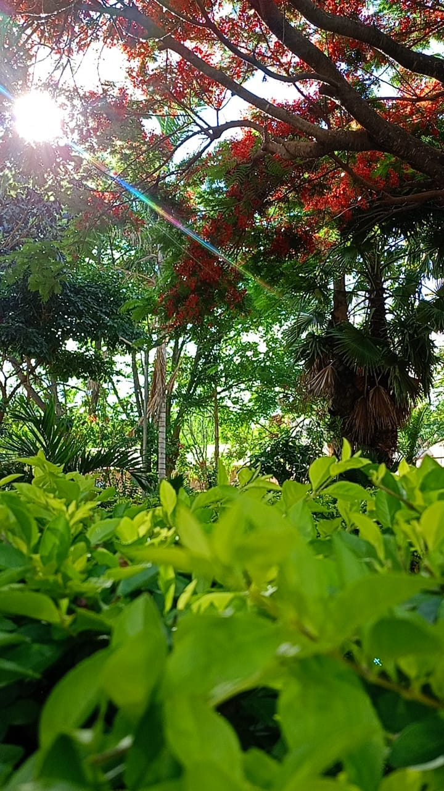
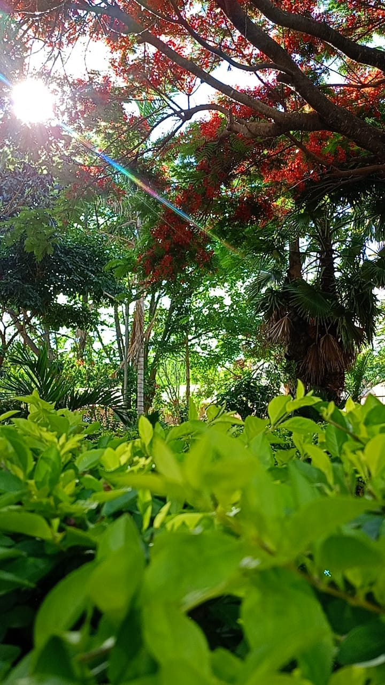

La Feria Gastronómica de Pulquina Abajo comenzó en 2017 con la Feria Bella Asunta y se celebra todos los viernes de 6:00 p.m. a 10:00 p.m. Con el objetivo de generar ingresos para las familias locales, en 2020 se sumó una nueva asociación llamada 22 de Noviembre. Actualmente, participan 16 emprendedoras de la Feria Bella Asunta y 20 de la asociación 22 de Noviembre. En la feria se venden una variedad de alimentos y postres, como gelatina, tortas, budines, empanadas, pique, pollo a la parrilla, locro, algodones de azúcar, entre otros. Es una oportunidad para apoyar a las emprendedoras locales y disfrutar de una deliciosa oferta gastronómica.
